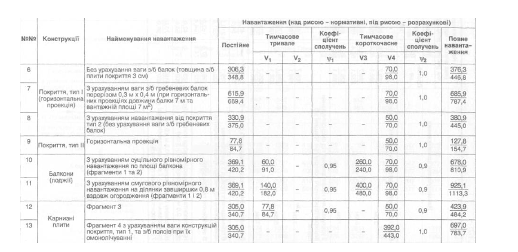

Розробити таблицю відповідно до варіанту.
| № | Конструкції | Найменування навантаження | Навантаження ( над рисою - нормативні, під рисою-розрахункові) | |||||||
| Постійне | Тимчасове тривале | Коефіцієнт сполучень | Тимчасове короткочасне | Коефіцієнт сполучень | Повне навантаження | |||||
| V1 | V2 | K1 | V3 | V4 | K2 | |||||
| 6 | Покриття, тип I (горизонтальна проекція) | Без урахування ваги з/б балок ( товщина з/б плити покриття 3 см) | 330.9/375.0 | - | - | - | - | 70/98 | 1,0 | 380.9/445.0 |
| 7 | З урахуванням ваги з/б гребеневих балок ( товщина з/б плити покриття 3 см) | 330.9/375.0 | - | - | - | - | 70/98 | 1,0 | 380.9/445.0 | |
| 8 | З урахуванням від покриття тип 2 ( без урахування ваги з/б гребеневих балок) | 330.9/375.0 | - | - | - | - | 50/70 | 1,0 | 380.9/445.0 | |
| 9 | Покриття, тип ІІ | Горизонтальна проекція | 77.8/84.7 | - | - | - | - | 50/70 | 1,0 | 127.8/154.7 |
| 10 | Балкони (лоджії) | З урахуванням суцільного рівномірного навантаження по площі балкона ( фрагмент 1 та 2) | 369.1/420.2 | 60.0/91.0 | - | 0.95 | 260/240 | 70/98 | 0.9 | 925.1/1113.3 |
| 11 | З урахуванням смугового рівномірного навантаження по ділянки завширшки 0.8 м вздовж огородження (фрагменти 1 і 2) | 369.1/420.2 | 60.0/91.0 | - | 0.95 | 260/240 | 70/98 | 0.9 | 925.1/1113.3 | |
| 12 | Карнизні плити | Фрагмент 3 | 369.1/420.2 | 60.0/91.0 | - | 0.95 | - | 70/98 | 0.9 | 925.1/1113.3 |
| 13 | Фрагмент 4 | 369.1/420.2 | - | - | - | - | 70/98 | 0.9 | 925.1/1113.3 | |